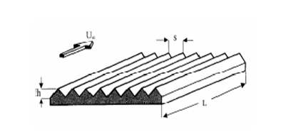
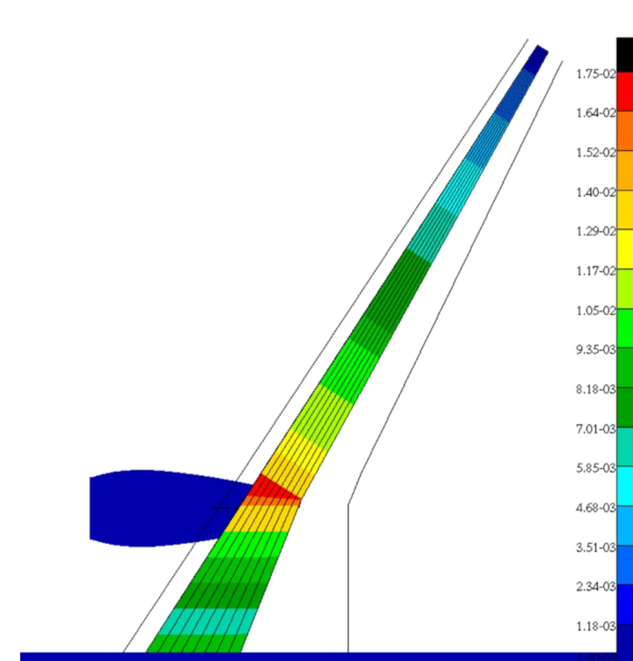

Introduction
Since the invention of the aeroplane, many engineers have tried to find more effective ways to help change the design of the aircraft such
that it can achieve extraordinary achievements. Because of these changes, we were able to create such aircraft as the Concorde, the first
commercial aeroplane that was able to surpass sound, reaching a speed of 2,158 km/h. We were also able to make fighter jets like the
North American X-15 and MiG-25 Foxbat, which reached speeds like 7,274 km/h and 3,000 km/h. Engineers were able to make aircraft reach
such speeds with the understanding of how aerodynamics works. This paper is designed to help understand how these engineers used aerodynamics
to aid in aircraft design.
Content
Drag
One main issue in trying to get planes to high speeds is the drag force, as it hinders the acceleration of the aircraft. Engineers have
formulated the concept of using more advanced materials and changing the structural design of the aircraft to combat this. This concept is
further studied in the paper
“Review on the Drag Reduction Technologies in Aircraft” by A.K. Mubarak and P.S. Tide. The authors explain overcoming the drag
force by using
“riblets with symmetric v-grooves (height equal to spacing) with adhesive-backed film manufactured by the 3M company (USA) have been widely
investigated” (Mubarak & Tide, 2024). The results showed “colossal consistency with regard to the degree of drag reduction as well as
certain aspects of flow structure” (Mubarak & Tide, 2024).

Figure 1: Virtual representation of the v-grooves.
Weight
Even though the weight of the aircraft may seem insignificant compared to other factors like thrust and lift, it can still cause issues like
higher fuel usage, as more energy is needed to lift a heavier plane. Engineers have proposed the idea of changing the wing's structure to
reduce weight. In the paper
“Loads Analysis and Structural Optimization of a High Aspect Ratio, Composite Wing Aircraft”, they tried to change the weight
distribution of the wing. “A significant amount of weight reduction is observable when using composite materials for the primary structure”
(Sinha et al., 2024).

Figure 2: Diagram of the wing structure.
Thrust
Thrust is the driving force generated by the aircraft’s engines. To help aircraft reach high speeds, engineers need to maximize the thrust
force experienced by the aircraft after lift-off. One main idea most engineers focus on is changing the entire engine's design. Some ideas
engineers keep in mind when changing the engine design include using more advanced materials. Using advanced materials helps increase the
force of thrust as less energy is needed. The article
“Advanced Materials and Coatings for Future Gas Turbine Applications” by Christoph Leyens references a material known as TBC which
“consist of thin ceramic layers of low thermal conductivity - typically partially stabilized zirconia - which are applied on aerofoil surfaces
that just have a metallic corrosion resistant coating.” Leyens (2024) states,
“Application of the TBCs enables increasing engine performance/thrust by either increasing the gas temperature or reducing the cooling air flow.”
Overall, advanced materials like TBC allow aircraft to reach high speeds with reduced energy requirements.
Lift
The lift force opposes the weight of the aircraft, enabling it to fly. Engineers have designed most aircraft to use wings to create lift.
This is done by angling the wing so that when in contact with the wind, it generates a vertical upward force and a horizontal force. The paper
“Evolutionary Understanding of Airfoil Lift” by T. Liu discusses the various ways engineers have adjusted the airfoil
to increase lift. As Liu (2024) states,
“The thicker, more curved airfoils improve the lift-to-drag ratio, which is essential for high-speed performance in aircraft.”
Materials
Materials used in aircraft design are crucial for achieving high-speed performance. Materials must be lightweight and durable while also
contributing to the aircraft's structural integrity. The use of composite materials, such as carbon fiber and advanced alloys, plays a
vital role in ensuring that aircraft maintain both performance and strength at higher speeds.